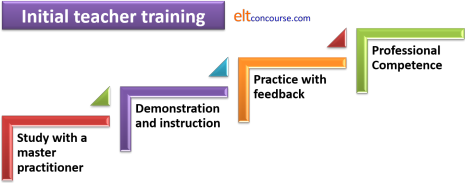
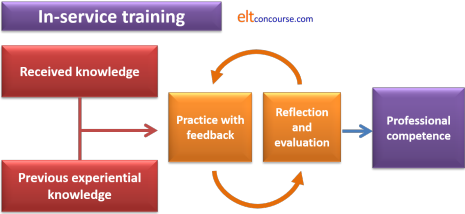

Initial vs. in-service teacher training

There are similarities between all sorts of teacher training at
all levels, of course, because, after all, all forms of training
have the same end: to contribute to the trainees' professional
competence.
It is, however, a mistake to assume that in-service training is some
kind of super initial training or that it can be conducted in the
same way. The reverse is also true: initial training is not a
matter of making a selection from an in-service training course and
discarding the difficult parts.
In-service training is not initial training's big brother and
initial training is not in-service training's cut down and simplified
smaller sibling.
In what follows, the reference will be to initial vs. in-service training without necessarily focusing on particular qualifications. The assumption is, however, that the reader will recognise the Cambridge CELTA and Trinity's CertTESOL as the best known and most widely recognised examples of the former and Cambridge Delta and Trinity's Dip. TESOL of the latter. TKT lies somewhere in between.
 |
Initial training |
Initial training is premised on the fact that the majority of
participants have never taught or, if they have taught, have not
taught a language.
Trainers need to remember what it was like not to know anything
about the profession and that sometimes requires a bit of effort.
Most initial training on short courses involves three types of activities:
- Demonstration
- In this, the tutor simply demonstrates the classroom
approach which is the focus of the session.
For example:- if the focus is on teaching vocabulary via a reading text, the tutor can employ a section of an article or book about reading and set the task of identifying some key terms in the text and matching them to definitions provided on a separate worksheet.
- if the focus is on teaching a tense structure, the tutor can demonstrate by introducing the use of the tense via a set of pictures and/or a timeline to explain its key function.
- if the focus is on using Dictogloss, the simplest way is clearly to do one with the trainees and then discuss with them how it worked and what skills they needed to deploy to complete the text.
- the use of teaching an unknown language to the trainees near the beginning of a course to demonstrate techniques such as modelling, drilling, correction and so on as well as alerting them to how it feels to be taught a language from scratch. This is an activity done on most initial training courses.
- Experiential learning
- This is an extension of demonstration and involves the trainees in firstly experiencing a technique pretending to be learners of the language and then doing it for themselves with their peers. The theory is that the act of using a technique one has seen demonstrated makes the activity more memorable and engaging.
- Loop input
- This is a term first introduced by Woodward in 1986.
In her words:
Loop input is a specific type of experiential teacher training process that involves an alignment of the process and content of learning. (Woodward, 2003:301)
The assumption, not without its critics, is that matching the content to the process results in better learning. Here's an example from Woodward's article:A course module on, say, the Presentation, Practice, Production, or 'Three Ps' method of introducing new language to foreign language students could, if run along loop input lines, have three main phases. The first is where the methods and materials associated with the Three Ps are elicited or taught to participants via texts or talks. The second is where the participants have a chance to try out the methods and materials in very controlled settings, such as micro- and peer-teaching practice. The third would be where they are encouraged to transfer them to situations which would be of use to them in their own classrooms. Towards the end of the module, if participants had not noticed already, the congruity between the content and the process of the module would need to be pointed out by discussion.
The part at the end about discussion is an important one. Woodward calls this decompression time and avers that it allows for a detailed and very useful consideration of what has been encountered.
(op. cit.:304)
There are, naturally, many other ways in which a topic can be
taught on an initial training course but the key aspect of such
courses is that the tutor is, throughout, demonstrating what the
participants need to learn to do.
It is assumed, therefore, that simply lecturing people about a topic
presents a false model of what teaching should be in the classroom.
Efforts are accordingly made to make the process match the content.
This is a process of training akin to watch-and-see. It is also known as sitting by Nellie, a way in which industrial workers were trained by being paired with an experienced and skilful operative. It was also called exposure training incidentally which neatly summarises the three facets of this sort of training explained here.
Here's a diagram to show what this kind of training usually involves:

To explain:
- Study with the master practitioner (you, in this case) and
demonstration and instruction involve:
- being shown how something is done
- being told why it's useful and effective
- being told how to do it and vary it sensibly
- Practice with feedback comes in two forms:
- micro-teaching and peer-teaching with feedback from peers and the tutor
- teaching practice with real learners and feedback from tutors primarily and peers secondarily
- Professional competence emerges as a result of the repeated application of the previous stages.
The issue is that this competence is based almost entirely on
practical application with one set of volunteer learners. The
result is often competence of a rather brittle kind: it works when
the teacher is faced with a familiar set of circumstances,
learner characteristics and aims but it may break down if the setting and
types of learners are very different from what has previously been
encountered.
That's why in-service training is important.
 |
In-service training |
In-service training is different in three ways (at least):
- Quantitatively
There is a great deal more to learn than some basic theory and practical classroom techniques. - Qualitatively
This is a reflective and developmental level of training usually leading to a wholly portable level of qualification which will prove its worth in a range of teaching environments.
The aim of in-service training is not limited competence, it is generalised competence which can be demonstrated anywhere with any kind of learner. - Procedurally
We are beyond the stage of sitting by Nellie.
In-service training is premised on the fact that the participants have
already attained a reasonable level of competence in the classroom
and can demonstrate the ability to apply all the techniques they
were originally taught on an initial course, and more.
They have decided, too, that this is their chosen profession, not a
passing fancy, and they are committed to a process of personal and
professional development.
Trainers need to remember that such people are not going to be very
impressed by being asked to copy the trainers' behaviours and apply
what they are learning to teaching their peers under supervision.
These people want to take what they learn and use it to enhance
their own effectiveness in helping learners to learn.
The form that training takes is not a matter of seeing, doing and then applying but of the application of experience and theory, reflection and constant improvement. The picture is:

To explain:
- Received knowledge refers to:
- lectures and workshops on the course
- reading and research
- observations of other teachers
- input from colleagues, conferences, workshops, training courses and the like
- Previous experiential knowledge refers to:
- substantial (often set at a minimum of around 1200 hours of teaching) experience
- personal reflections on what was and was not effective
- the responses and success of their learners
- the content of an initial training course seen in the light of later experience
- Both kinds of knowledge feed into the central process of researching, preparing teaching and reflecting on teaching evaluated by oneself or a tutor / mentor.
- Professional competence emerges as a result of the repeated application of the central section of the whole process.
The sort of professional competence as a language teacher which emerges from a process such as this is very different from that which emerges from initial training. It is independent of setting, learners' aims, learners' characteristics and the demands of a syllabus. It is, in other words, a truly portable, generic qualification (or should be).
Implications |
The focus so far has been on what distinguishes initial from
in-service training and that's logical because a failure to
understand the differences and act on them is often the cause of
much disappointing training.
There are, naturally, similarities, too. Both types of
training:
- require a constant focus on the classroom. At initial level, this goes almost without saying but in-service training is not just a theoretical exercise (which is why many Masters' degree courses do not count as teaching qualifications). In-service training, too, requires high levels of classroom expertise. The difference being that at in-service level, people also need to know why they are doing something.
- need to be conducted by people who have an appropriate level of mastery of both the theoretical and practical sides of their profession. At initial level, this need be no more than the holding of an in-service qualification but at in-service level, a good deal more is required, of course.
However, treating diploma-level training as super-certificate training or certificate training as dumbed-down diploma training leads to a good deal of error and confusion. It may mean that:
- an initial training course will be too theoretical and leave
the participants unable to apply what they now know in the
classroom.
(The obverse of this coin is that an initial course which only focuses on practical technique will equip the participants with what they require for the immediate demands placed on them but not give them the information or skills they need to develop later.) - an in-service course fails to demand a level of theoretical
understanding concomitant with the needs of participants and
leaves them without a firm enough basis on which to amend,
develop and adapt what they do.
(The obverse of this coin is that an overly heavy focus on theory (of methodology, learning, language etc.) at the expense of practical ability will leave trainees able to talk and write about teaching more effectively and impressively than they can do it.)
The problem is sometimes particularly acute when people move from tutoring on initial training schemes to tutoring on in-service schemes without taking the differences and the differing demands into adequate account.
Trickle-down training |
It is something of an oddity, given the comments made here on the differences which should be apparent between initial and in-service training, that one form of in-service training is almost always accomplished by a process of sitting by Nellie: training new trainers.
It is pointed out in a somewhat polemical and deliberately controversial article on this site that:
Because there is no single, recognised route
to becoming an ELT teacher trainer,
[trainer training] procedures will vary but what they almost
always have in common is some kind of shadowing element. This
involves the trainer in training observing more experienced trainers
and being observed in turn by these more experienced colleagues who
attempt to shape both the content and manner of delivery of
training. There is, in other words, a deliberate attempt to transmit
content and practice ...
Click here to read the whole article.
The context here is that as approaches to training and the content of courses is passed down through generations of trainers in the same or closely connected institutions and inevitably meme inheritance becomes apparent. Errors are duplicated (with new ones added as things go along), emphases are repeated and particular concepts are repeatedly forefronted until eventually the institution's courses become unique and no longer tied explicitly to the syllabus they are attempting to follow.
Some see that as a positive, of course:
Cambridge allows the individual trainers to
tailor the courses to suit the trainees and to be compatible with
the trainer’s own attitudes and beliefs about language teaching.
Chong, 2016
If you substitute prejudices for attitudes and beliefs, you'll see the obvious danger.
With effort, this kind of slow decay of the purity of training can be avoided but that is best done by occasionally at least interrupting the trickle-down training process by importing fresh talent and new people who have been trained elsewhere.
References:
Chong, CS, 2016, 10 things I like about the CELTA course,
https://www.etprofessional.com/10-things-i-like-about-the-celta-course
Woodward, T, 2003, Key Concepts in ELT: Loop Input, English Language Teaching
Journal, 57/3, July 2003, pp301-304, Oxford: Oxford University Press